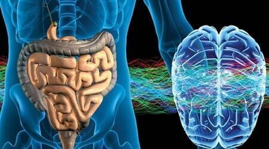
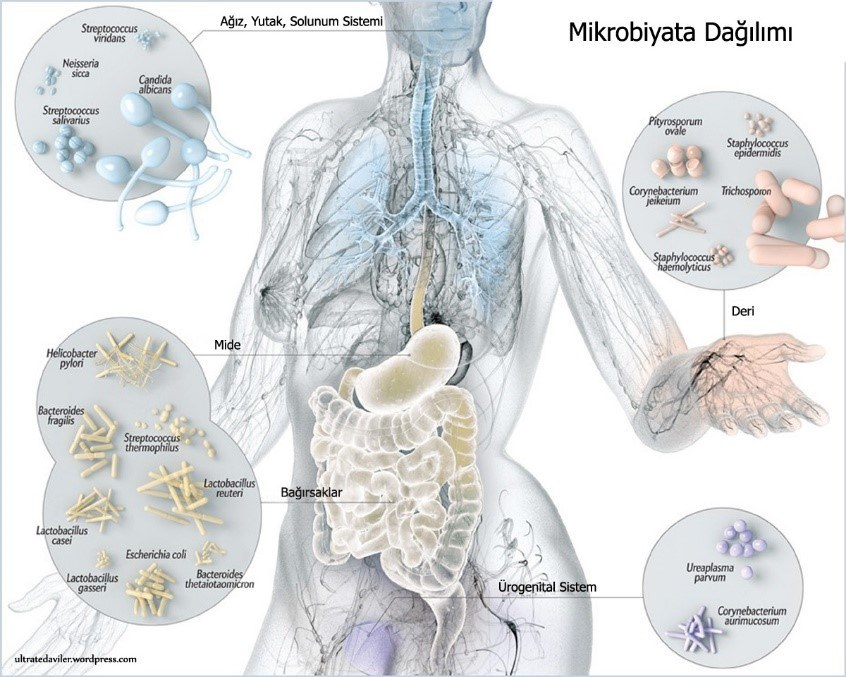
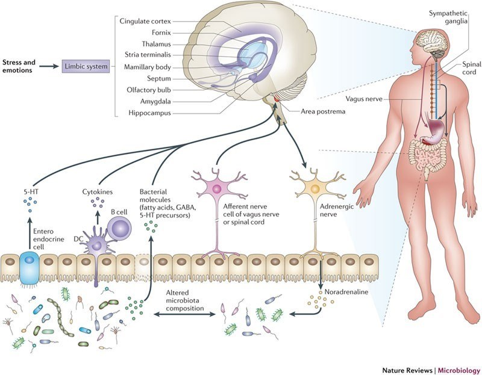
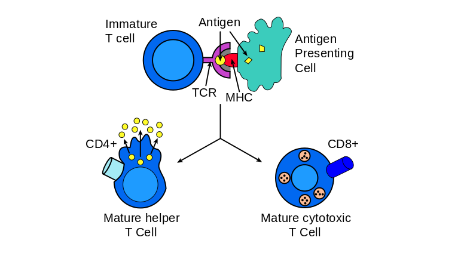
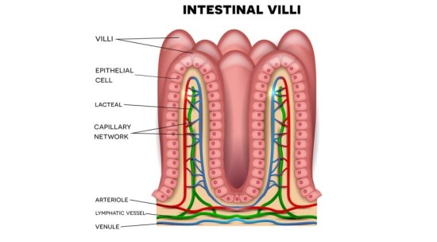
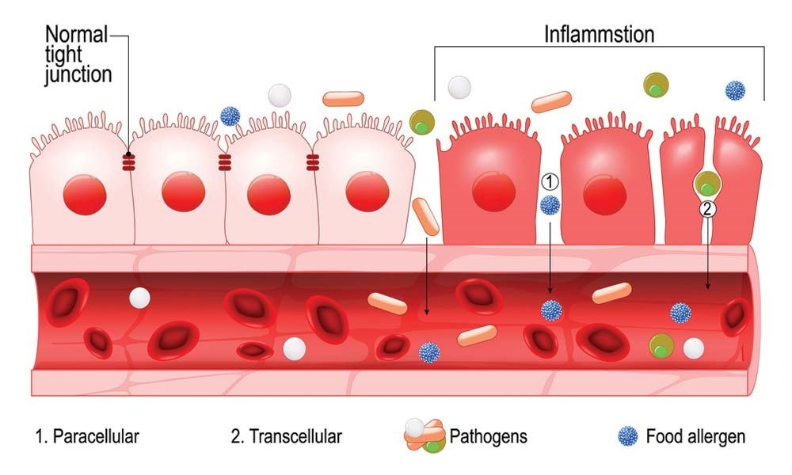

BAĞIRSAKLARIN SAĞLIKLI YAŞAM İÇİN ÖNEMİ
Günümüzde tanı ve tedavi yöntemlerinin artması neticesinde insan ömrü uzamakta ve sağlıklı yaşamanın önemi giderek artmaktadır.
Sağlıklı yaşamak, hepimizin istediği bir şeydir, çoğumuz onun için bir şeyler yaparız ancak sadece bazılarımız sağlıklı yaşamak için gereklilikleri özümser ve yaşamımıza katarız.
Sağlık yaşamak aslında bir yaşam değişikliği modelidir. Kalıcı olarak bazı faydalı alışkanlıkların edinilmesi, bazı zararlı alışkanlıklardan da uzak durulması sağlıklı yaşam değişikliği için önemlidir.
Sağlıklı yaşamın kazanılması hakkında; stres yönetimi, dengeli beslenme, düzenli fiziksel egzersiz vb. birçok şey sayabiliriz fakat sağlıklı yaşamın anahtarı bağırsakların sağlıklı olmasından geçer desek yanlış söylemiş olmayız.
Peki bağırsakları bu kadar önemli kılan şey nedir?
Bağırsakların insan sağlığı hakkındaki önemi gün geçtikçe yapılan bilimsel araştırmalar neticesinde daha iyi anlaşılmaktadır. Eskiden bağırsak denildiğinde yalnızca sindirim ile ilgili görevler ve hastalıklar akla gelmekteydi. Bugünse bağırsaklar denildiğinde dünya tıbbında ilk akla gelen mikrobiyota, bağışıklık, zengin sinir sistemi ağı, sindirim görevleri gelmektedir.
Bağırsakların gizemli dünyasını keşfe çıkmadan önce bağırsaklar hakkında genel bir bilgilendirme yapalım;
- Bağırsaklar 400-500 (bazı yayınlarda 40-120 metrekare) metrekare yüzey alanına sahip olan (1), sindirim sistemimizin mide ile anüs arasında kalan kısmıdır.
- Bağırsaklar ince bağırsak ve kalın bağırsak olmak üzere iki kısımdan oluşur.
- İnce bağırsak 3-5 metre uzunluğundadır (2). Gıda emiliminin %90’ı ince bağırsaklarda gerçekleşir. (3)
- Kalın bağırsaklar, yediğiniz gıdalardaki suyu ve elektrolitleri emer. Kalın bağırsakta emilmeyen kalan gıda ürünleri dışkı haline gelir.
- Ek olarak, kalın bağırsakta bulunan bakteriler , kalan besin maddelerinin daha da parçalanmasına yardımcı olabilir. K vitamini gibi vitaminler de kalın bağırsakta üretilir.
Bağırsakların gizemli dünyasının keşfi
Bağırsaklar ve Sinir sistemi; Beyninizin yanı sıra, bağırsağımız kendi sinir sistemine sahip tek organdır. İnce bağırsağınızda tek başına omuriliğiniz kadar çok nöron vardır.
Bağırsaklardan beyne giden afferentler (sinyali son kısımdan beyine ileten sinirler) beyinden bağırsaklara gelen efferentlerden (beyinden bağırsaklara sinyal ileten sinirler) daha fazladır. Bu yaklaşık 9/1 oranındadır (3)
Bağırsak sinir hücreleriniz serotoninin (merkezi sinir sistemi ve bağırsaklarda üretilebilen bir çeşit nörotransmitterdir) yüzde 95'ini üretir (4) (nörotransmiter; sinir hücreleri arasındaki haberleşmeyi sağlayan kimyasal moleküller)
Serotonin önemi hakkında kısa notlar vermeden geçmek istemem;
- Seratonin merkezi sinir sisteminde, trombositlerde (kan pıhtılaşmasında görevli hücreler),ve çoğunlukla da bağırsakta üretilir.
- Serotonin kan beyin bariyerini geçemez. (kan beyin bariyeri: sadece belli büyüklük ve yapıdaki moleküllerin geçişine izin veren bariyer görevi gören yapı)
- Namı diğer Mutluluk hormonudur ve anti-depresan ilaçların birçoğunun içeriğini oluşturur.
- Normal bağırsak fonksiyonuna katkıda bulunur ve tok olduğunuzu bilmenize yardımcı olmak için yemek yerken iştahınızı azaltır
- Uyku uyanıklık döngüsü üzerine etkisi vardır.(5)
- Vücudun melatonin (uyku sirkadyen ritmi için önemli bir hormon) üretebilmesi için serotonine ihtiyacı vardır (6)
- Kesik gibi herhangi bir doku hasarınız olduğunda, kanınızdaki trombosit hücreleri yaranın iyileşmesine yardımcı olmak için serotonin salgılar (7)
- Çalışmalar, serotonin seviyelerinin kemik yoğunluğunu (kemiklerinizin gücünü) etkileyebileceğini göstermiştir. (8)
- Serotonin seviyelerini yükselten bazı antidepresanlar, yüksek serotonin seviyeleri cinsel arzudaki azalma ile ilişkilendirildiğinden, libido üzerinde bir etkiye sahip olabilir (9)
Bağırsaklar, Bağışıklık Sistemi, Mikrobiyota
Sindirim sistemi vücuda açılan bir kapı görevi görür. Bu nedenle vücudun savunmaya en ihtiyaç duyduğu yer burasıdır. Doğal olarak bağışıklığın önemli bir kısmı buradadır.
Mikrobiyota Hakkında
İnsan mikrobiyotası, insan vücudunun birçok yerinde yaşayan mikropların karmaşık bir topluluğudur.
İnsanlarda, insan hücrelerinden (37,2 trilyon) (10) çok daha fazla bakteri hücresi (39 trilyon) (11) var olduğunu düşünürsek;
İnsan vücudu ve barındırmış olduğu mikrobiyata muhteşem bir uyum içerisinde birlikte kazan kazan ilişkisi geliştirdi.Bu ilişkide kaybeden olması demek dengelerin bozulması ,ve insan sağlığının bozulmasına kadar giden bir sürece yol açabilmektedir.
Genel olarak insan merkezli dünya görüşümüze rağmen, küresel çeşitlilikte ve sayılarda bu gezegendeki yaşama hâkim olan mikrobiyal popülasyondur. İnsan vücudunun kendisi, ayrı anatomik nişlerde yaşayan ve kendi somatik(vücut) ve germ(üreme) hücrelerimizi büyüklük sırasına göre aşan çok sayıda bakteri, arke, virüs ve ökaryotik mikrop için bir iskele görevi görür.
Vücudun İçi ve Dışı Kavramı, Bağışıklık için Antijen kontrolü
Johns Hopkins Üniversitesi Tıp Fakültesi'nde patoloji profesörü yardımcısı Dan Peterson, “Bağışıklık sisteminizin büyük bir kısmı aslında GI sisteminizde” diyor. "Bağışıklık sistemi vücudunuzun içindedir ve bakteriler vücudunuzun dışındadır." derken aslında bağırsakların bağışıklık sistemi için öneminden bahsediyor.
Konuyu daha iyi kavramak adına önem verdiğim için vücudun içi ve dışı kavramı konusunda ufak bir açıklama yapma gereği hissediyorum.
Ağızdan anüse kadar olan kısım, vücudun içi gibi görünse de gerçekte dışıdır. Bir şeyin kulağımıza, burnumuza sokulması o şeyi vücuda dahil etmez. Herhangi bir şey bağırsaklardan emilmediği sürece fonksiyonel olarak vücudun dışındadır.
Vücudun içi ve dışı kavramının önemi bağırsaklarda her gün yoğun olarak gerçekleşen bağışıklık sistemi faaliyetlerini anlamak için önemlidir.
Muhteşem sınır kontrolü görevlileri ve pasaport (antijen) kontrolü
Ağız yoluyla vücuda girenler havalimanındaki yolcu gibidirler ve pasaport kontrolünden geçmeleri gerekir.
İnsan vücuduna girmek isteyenlerin pasaport kontrol noktası ise bağırsak mukoza altıdır.
Bağırsak mukoza altında yerleşen bağışıklık sistem hücreleri mikropları da, proteinleri de taşıdığı antijenlerinden (Antijen, bağışıklık tepkisini uyarabilen, özellikle vücudun enfeksiyonla savaşan beyaz kan hücreleri olan lenfositleri aktive eden madde) (8) tanır.
Vücut sınır hattında pasaport (antijen) kontrolünün etkin yapılabilmesi için bağışıklık sistemi hücreleri sınır hattına konuşlanmalı ve vücut ile sürekli iletişim halinde olmalıdır.
Bağırsakların Geniş Yüzey Hattı ve Bağışıklık
Daha önce de bahsettiğimiz gibi bağırsak yüzey alanı son derece geniştir.
Bu zarın içi vücudun içi, dışı vücudun dışıdır.
Bu zardan her gün öğün miktarınca yenen yiyecek ve içecekle birlikte saymakla bitmez bakteri, virüs, parazit, yeterli sindirilmediği takdirde vücuda girmemesi gereken gıda antijenleri sıkıca temas ederek geçiyor.
Bağırsakların Antijen (Pasaport) Yükü
Bağışıklık sisteminin tek bir günde karşı karşıya geldiği yabancı madde, mikrop, antijen miktarı, vücudun diğer bölümlerinin hayat boyunca karşılaştıklarından daha fazladır. (12)
Vücut bağışıklık sistemi hücrelerinin %70-80’i bağırsaklardaki lenfoid dokuda yerleşiktir ve bu hücreler özel reseptörleri sayesinde mikrobiyatadaki (bağırsak bakterileri) değişiklikleri hissedip takip ederler. (13)
Mühendislik Harikası
Dokuyu dış etkilerden koruyan epitel katmanı deride 6 kat, gözde 5 kattan oluşur.
40-120 metrekare alanda her gün inanılmaz antijen yükünün, mikroorganizmanın ve besinlerin kontrolününün yapıldığı bağırsak mukoza bariyeri bir kat epitel ile örtülüdür.
Mühendislik hatası mı, yoksa harikası mı?
Bağırsakların en önemli görevlerinden birinin de besin maddelerine ihtiyacı olan organlara ulaşması için hızlı emilim fonksiyonu olduğunu unutmayalım.
Bağışıklık Sisteminin Uyarılması- Sızdıran Bağırsak-Leaky Gut
İnsanda sindirim, solunum yolları, vajinal mukoza gibi tüm mukozalar üzerine sürekli olarak salgısal IgA adı verilen antikor salgılanır. Bunu bağırsak mukoza yüzeyini örten bir teflon kaplama olarak düşünebiliriz.
Yabancı antijenlerin (mikroplar veya iyi sindirilmemiş proteinler) yüzey epiteliyle temasından önce salgısal IgAlar yabancı antijeni nötralize eder ve ilk aşamada savunmayı oluşturur.
Bağırsak salgısal IgA bariyerini geçen yabancı antijenler mukoza altı bağışıklık hücreleri (GALT MUHAFIZLARI) tarafından karşılanır. Sorun çözülürse çok güzel, çözülemez ise savaş boruları çalmaya başlar ve bu bir kısır döngüyü başlatır.
Bağırsak sinir sisteminin merkezi sinir sistemi ile olan direk ilişkisi tüm vücutta immün sistem hücre uyarılmasına sebep olur. Savaş kendi topraklarınızda ise tahribat uyarının büklüğü ile orantılıdır. Bağırsakta oluşan hasar koruyucu bariyerleri düşürecek ve daha çok yabancı antijen epiteli geçip immün sistemi uyaracaktır.
Yabancı antijen olarak gıdalar
Yabancı antijen olarak yalnızca bakterileri değil, uygun şekilde parçalarına ayrılmamış proteinleride sayabiliriz.
Proteinlerin sindiriminde makas görevi gören mide asidi ve mide asidi sayesinde aktifleşen pepsinojen enzimidir.
Gönül rahatlığıyla içtiğimiz mide koruyucu ilaçlar kontrolsüz uzun süreler kullanıldığında mide asidini ve buna bağlı çalışan sindirim enzimlerini baskılar. Bu durum bağırsakların antijenik yükü ve oluşabilecek hastalıklar açısından önemli bir risk barındırmaktadır.
Bu sadece örneklerden bir tanesidir, İlaç ve gıda katkı malzemeleri, ortam havasındaki kimyasallar, ağır metaller vb. bağırsaklarımızın sağlığını bozmakta ve sonucunda sadece sindirim sistemi hastalıkları oluşmamakta birbiriyle bağdaştırmakta zorlanacağınız hastalıklar ortaya çıkabilmektedir.
Leaky Gut ve İlişkili Hastalıklar
Artan bağırsak geçirgenliğinin çölyak hastalığı, Crohn hastalığı ve irritabl bağırsak sendromu gibi belirli gastrointestinal rahatsızlıklarda rol oynadığını zaten biliyoruz. En büyük soru, sızdıran bir bağırsağın vücudun başka yerlerinde sorunlara neden olup olmayacağıdır.
Bazı çalışmalar, sızdıran bağırsakların diğer otoimmün hastalıklar (otoimmün hastalık ;bağışıklık sistemi hücrelerinin sağlıklı hücreleri yeterince tanıyamayıp antijenik uyarılma sonucunda sağlıklı vücud hücrelerine yanıt vermesi durumu sonucu oluşan hastalıklardır)(lupus, tip 1 diyabet, multipl skleroz), kronik yorgunluk sendromu, fibromiyalji , artrit, alerji, astım , akne, obezite ve hatta akıl hastalığı ile ilişkili olabileceğini göstermektedir.(14)
Functional Medicine Universıty ;Ronald Grisanti DC “Sızıntılı Bağırsak Sendromu, genellikle kronik yorgunluk sendromu ve pediatrik immün yetersizliklerin gerçek temelidir “
Başta antibiyotikler olmak üzere steroid olmayan ağrı kesici ilaçlar bağırsak yüzey alanında tahribata sebep olabilmekte ,bu tahribatta bağırsakta hücreler arası bağlantılarda düzensizlik ve sızdıran bağırsağa sebep olabilmektedir.
Diğer yaygın nedenler kemoterapi, alınan alkol, yeni bir halıdan solunan formaldehit, gıda alerjenleri, stres duyguları, laktaz eksikliği, glüten / gliaden alerjisi, anormal bağırsak florasıdır (bakteriler, parazitler, mayalar).”
Bizler bağırsak sağlığımız için neler yapabiliriz;
Öncelikle anlamamız gereken sağlıklı olmak için bütünsel olarak yaklaşıp olumlu manada yaşam değişikliğine gidilmesi gerekir.
- Yüksek lifli gıda alımınızı artırın . Sebzelerde, baklagillerde ve meyvelerde bulunan çözünür lif, bağırsağınızın yararlı bakterilerini destekler. (15)
- Rafine karbonhidrat alımınızı azaltın . Çok fazla şeker, bağırsak bariyer işlevini olumsuz etkileyebilir. (16)
- NSAID kullanımınızı azaltın . Aspirin, ibuprofen ve naproksen gibi steroid olmayan antiinflamatuar ilaçlar (NSAID'ler) bağırsak geçirgenliğini artırabilir. (17)
- Probiyotik takviyeleri alın . Probiyotiklerin faydalı bakterilerinin, IBS gibi birçok gastrointestinal rahatsızlık için yararlı olduğu düşünülmektedir. (18)
- Stres seviyenizi azaltın. Bağırsak bakterileri kronik stresten zarar görebilir. (19)
- Alkol alımınızı azaltın. Aşırı alkol tüketimi bağırsak geçirgenliğini artırabilir. (20)
- Sigarayı bırakmak. Tütün dumanı, sindirim sistemi iltihabını artırabilir ve bir dizi bağırsak rahatsızlığı için bir risk faktörüdür.(21)
Son Söz
Bağırsak ve anksiyete, depresyon, otoimmün hastalıklar, artritler ve daha fazla hastalığın tanı ve tedavisi için araştırmalar yönünü bağırsaklara çevirmiş durumda.
Sağlıklı bir yaşam için sağlıklı bağırsaklar şarttır. Sağlıklı yaşam bir yaşam değişikliği modelidir.
Teşekküreler
Dr. Gökhan YENER
Kaynaklar
(1)https://barnat.com.tr/dosyalar/20-01.pdf (THE IMPORTANCE OF INTESTINAL AND ENTERIC NERVOUS SYSTEM IN REGULATION)
(2)https://barnat.com.tr/dosyalar/20-01.pdf (THE IMPORTANCE OF INTESTINAL AND ENTERIC NERVOUS SYSTEM IN REGULATION)
(3)https://barnat.com.tr/dosyalar/20-01.pdf (THE IMPORTANCE OF INTESTINAL AND ENTERIC NERVOUS SYSTEM IN REGULATION)
(4) Terry N, Margolis KG. Serotonergic Mechanisms Regulating the GI Tract: Experimental Evidence and Therapeutic Relevance. Handb Exp Pharmacol. 2017;239:319-342. doi: 10.1007/164_2016_103. PMID: 28035530; PMCID: PMC5526216.
(5) Nakamaru-Ogiso E, Miyamoto H, Hamada K, Tsukada K, Takai K. Novel biochemical manipulation of brain serotonin reveals a role of serotonin in the circadian rhythm of sleep-wake cycles. Eur J Neurosci. 2012;35(11):1762‐1770. doi:10.1111/j.1460-9568.2012.08077.x
(6) Haduch A, Bromek E, Wojcikowski J, Golembiowska K, Daniel WA. Melatonin supports CYP2D-mediated serotonin synthesis in the brain. Drug Metabolism and Disposition. 2016;44(3):445-452. doi:10.1124/dmd.115.067413 . Yaşlanma İlaçları. 2011; 28: 345-367. doi: 10.2165 / 11589340-000000000-00000
(7) Sansone RA, Sansone LA. Sunshine, serotonin, and skin: a partial explanation for seasonal patterns in psychopathology?. Innov Clin Neurosci. 2013;10(7-8):20‐24.
(8) What causes depression?. Harvard Health Publishing. Updated June 24, 2019.
(11) https://www.britannica.com/science/antigen
(12) (Mayer,L.Mucosal immunity pediatrics 2003)
(13) (Douglas EscobarM, Effect of İntestinal microbial ecology on the developing brain,JAMA pediatr 2013 ;167(4):374-379)
(14) ( Leaky Gut As a Danger Signal for Autoimmune Diseases. Frontiers in Immunology, May 2017.
The intestinal epithelial barrier: a therapeutic target? Nature Reviews Gastroenterology & Hepatology, November 2016.)
(15) Klinder A, Shen Q, Heppel S, Lovegrove JA, Rowland I, Tuohy KM. Impact of increasing fruit and vegetables and flavonoid intake on the human gut microbiota. Food Funct. 2016 Apr;7(4):1788-96. doi: 10.1039/c5fo01096a. PMID: 26757793.
(16) Bischoff SC, Barbara G, Buurman W, Ockhuizen T, Schulzke JD, Serino M, Tilg H, Watson A, Wells JM. Intestinal permeability--a new target for disease prevention and therapy. BMC Gastroenterol. 2014 Nov 18;14:189. doi: 10.1186/s12876-014-0189-7. PMID: 25407511; PMCID: PMC4253991.
(17) Bjarnason I, Takeuchi K. Intestinal permeability in the pathogenesis of NSAID-induced enteropathy. J Gastroenterol. 2009;44 Suppl 19:23-9. doi: 10.1007/s00535-008-2266-6. Epub 2009 Jan 16. PMID: 19148789.
(18) Hoveyda N, Heneghan C, Mahtani KR, Perera R, Roberts N, Glasziou P. A systematic review and meta-analysis: probiotics in the treatment of irritable bowel syndrome. BMC Gastroenterol. 2009 Feb 16;9:15. doi: 10.1186/1471-230X-9-15. PMID: 19220890; PMCID: PMC2656520.
(19) Foster JA, Rinaman L, Cryan JF. Stress & the gut-brain axis: Regulation by the microbiome. Neurobiol Stress. 2017 Mar 19;7:124-136. doi: 10.1016/j.ynstr.2017.03.001. PMID: 29276734; PMCID: PMC5736941.
(20) Wang Y, Tong J, Chang B, Wang B, Zhang D, Wang B. Effects of alcohol on intestinal epithelial barrier permeability and expression of tight junction-associated proteins. Mol Med Rep. 2014 Jun;9(6):2352-6. doi: 10.3892/mmr.2014.2126. Epub 2014 Apr 9. PMID: 24718485.
(21) Biedermann L, Zeitz J, Mwinyi J, Sutter-Minder E, Rehman A, Ott SJ, Steurer-Stey C, Frei A, Frei P, Scharl M, Loessner MJ, Vavricka SR, Fried M, Schreiber S, Schuppler M, Rogler G. Smoking cessation induces profound changes in the composition of the intestinal microbiota in humans. PLoS One. 2013;8(3):e59260. doi: 10.1371/journal.pone.0059260. Epub 2013 Mar 14. PMID: 23516617; PMCID: PMC3597605.